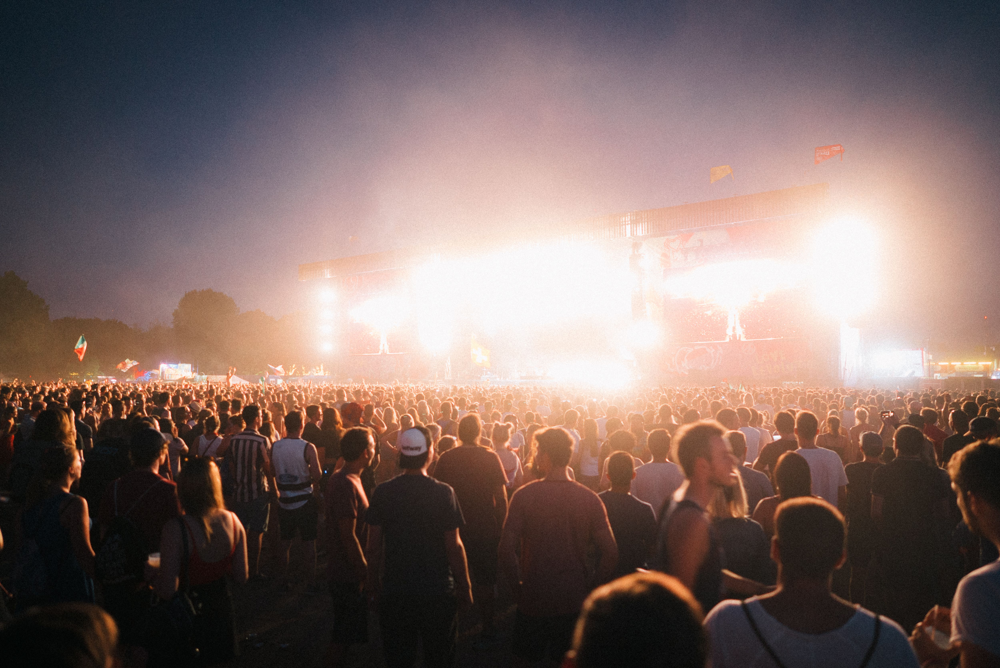
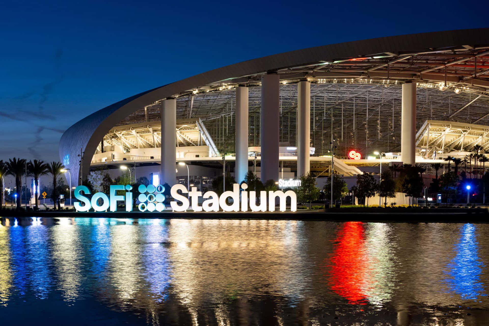
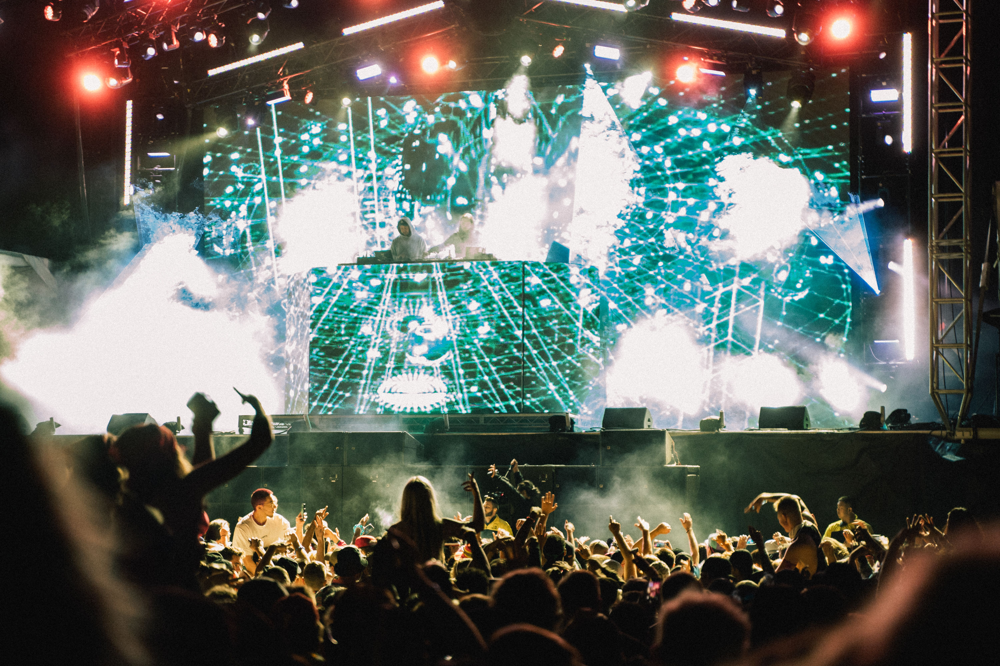
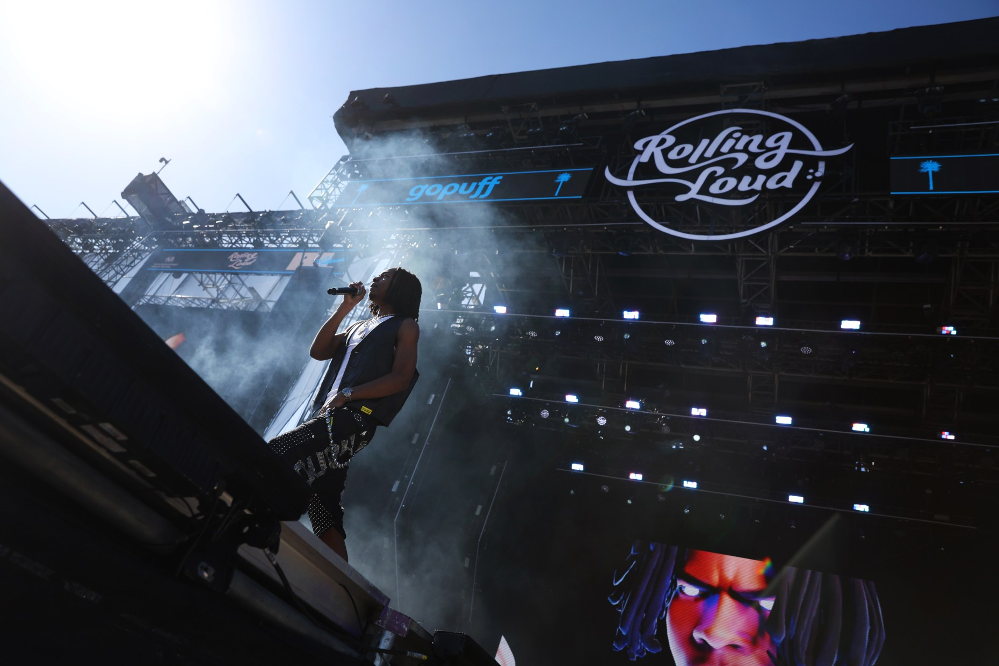
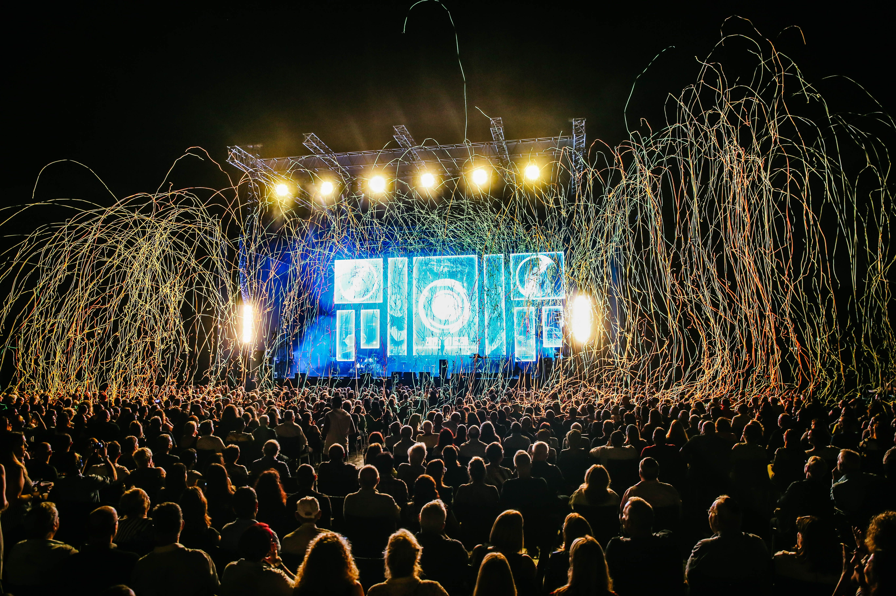

About Rolling Loud
Rolling Loud is one of the largest hip-hop festivals in the world. The festival focuses on rap and hip-hop music and brings together major artists, rising performers, producers, and fans from many different places.
Rolling Loud is more than a series of concerts. It is an experience where music, fashion, art, food, and festival culture all come together. For fans like me, it is a chance to see favorite artists perform live and share that experience with thousands of other people who love rap music.
How Rolling Loud Started

Rolling Loud began in Miami, Florida in 2015. The festival was created by Matt Zingler and Tariq Cherif, who wanted to create a large event focused completely on hip-hop. What started as a one-day festival grew quickly as more fans and artists became interested in the experience.
As the festival became more popular, Rolling Loud expanded to other locations. It has held events in places such as California, New York, the Bay Area, Portugal, Thailand, Australia, and other international locations. The festival continues to give fans the opportunity to see some of the biggest names in rap in one place.
Rolling Loud California

Rolling Loud California has been held at the Hollywood Park Grounds in Inglewood, California. The festival grounds are located next to SoFi Stadium, which is one of the most recognizable sports and entertainment venues in Los Angeles.
The location gives the festival a large outdoor space for multiple stages, food vendors, merchandise areas, carnival attractions, art installations, and thousands of fans. Even though the festival is next to SoFi Stadium, the performances take place on the surrounding Hollywood Park festival grounds.
What It Is Like Inside the Festival

Inside Rolling Loud, there are multiple stages playing music throughout the day. Fans can create their own schedule and move around the festival to see different artists. The atmosphere is energetic because people are singing along, dancing, taking pictures, and meeting other fans.
The festival also includes food stands, merchandise shops, water stations, bathrooms, seating areas, and different activities. Food options can include meals, snacks, and drinks from local vendors. Staying hydrated is important because fans spend many hours walking around and standing during performances.
VIP and Backstage Areas

Rolling Loud offers different ticket levels, including general admission and VIP options. Depending on the event, VIP guests may receive faster entry, access to private viewing areas, closer views of the stages, private bars, upgraded food options, shaded seating, and air-conditioned bathrooms.
Backstage areas are usually reserved for performing artists, festival employees, security, and people with special credentials. Regular fans normally cannot enter backstage areas, but VIP sections can provide a more comfortable experience and better viewing areas near the stages.
Why the Experience Matters

What makes Rolling Loud special is the combination of the music, the crowd, and the environment. Hearing favorite songs live feels different from listening to them at home. The performances, lights, stages, and reactions from the crowd make the festival feel like a moment that fans can remember for a long time.
For me, Rolling Loud represents the excitement and creativity of rap music. It gives fans the opportunity to experience the artists and songs they love in a completely different way.